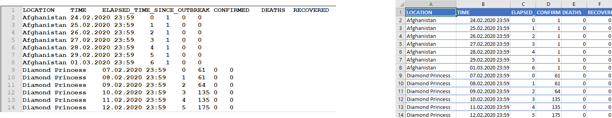

Pandas: Working with tabulated data (Excel files)
Pandas is a Python package that among many things are used to handle data, and perform operations on groups of data. It is built on top of Numpy, which makes it easy to perform vectorized operations. Pandas is written by Wes McKinney, and one of it objectives is according to the official website '' providing fast, flexible, and expressive data structures designed to make working with ''relational'' or ''labeled'' data both easy and intuitive. It aims to be the fundamental high-level building block for doing practical, real-world data analysis in Python''. Pandas also has excellent functions for reading and writing excel and csv files. An excel file is read directly into memory in what is called a DataFrame in Pandas. A DataFrame is a two dimensional object where data are typically stored in column or row format.
Pandas has so much functionality that it is almost like a programming language. Here we will only use it to read and write excel files, and do some basic filtering of data. However, there is a high probability that whatever you would like to do with your data, e.g. clean, filter, mathematical operations, there is already a Pandas command to achieve your goal.
DataFrame: The basic object in Pandas
You should think of a DataFrame as a single sheet in Excel with tabulated data. A DataFrame will typically have data stored with a header name and data in an array associated with that header, as illustrated in 1.
Figure 1: Official Covid-19 data, and example of files (left) tab separated (right) excel file.

If we have file in the data directory, we can import them into a DataFrame as follows
df=pd.read_excel('../data/corona_data.xlsx') # excel file
df2=pd.read_csv('../data/corona_data.dat',sep='\t') # csv tab separated file
If the excel file has several sheets, you can give the sheet name directly, e.g. df=pd.read_excel('file.xlsx',sheet_name="Sheet1"), for more information see the documentation.
We can easily save the data frame to excel format and open it in excel
df.to_excel('covid19.xlsx', index=False) # what happens if you put index=True?
Whenever you create a DataFrame Pandas by default create an index column, it contains an integer for each row starting at zero. It can be accessed by df.index, and it is also possible to define another column as index column.
Create DataFrame from dictionary
A DataFrame can be quite easily be generated from a dictionary. A dictionary is a special data structure, where an unique key is associated with a data type (key:value pair). In this case, the key would be the title of the column, and the value would be the data in the columns.
my_dict={'ints':[0,1,2,3], 'floats':[4.,5.,6.,7.],
'tools':['hammer','saw','rock','nail']
}
df=pd.DataFrame(my_dict)
print(df) # to view
Accessing data in DataFrames
Selecting columns
If we want to pick out a specific column we can access it in the following ways
# following two are equivalent
time=df['TIME'] # by the name, alternatively
time=df[df.columns[1]]
# following two are equivalent
time=df.loc[:,['TIME']] # by loc[] if we use name
time=df.iloc[:,1] # by iloc, pick column number 1
The loc[] and iloc[] functions also allows for list slicing, one can then pick e.g. every second element in the column by time=df.iloc[::2,1] etc. The difference is that loc[] uses the name, and iloc[] the index (usually an integer).
Why several ways of doing the same operation? It turns out that although we are able to extract what we want with these operations, they are of different type
print(type(df['TIME']))
print(type(df.loc[:,['TIME']]))
Selecting rows
When selecting rows in a DataFrame, we can use the loc[] and iloc[] functions
# pick column number 0 and 1
time=df.loc[0:1,:] # by loc[]
time=df.iloc[0:2,:] # by iloc
pandas.DataFrame.loc vs pandas.DataFrame.iloc
When selecting rows loc and iloc they behave differently, loc includes the endpoints (in the example above both row 0 and 1), whereas iloc includes the starting point and up to 1 minus the endpoint.
Challenges when accessing columns or rows
Sometimes when reading files from excel, headers may contains invisible characters like newline \n or tab \t or maybe Norwegian special letters that have not been read in properly. If you have problem accessing a column by name do print(df.columns) and check if the name matches what you would expect.
If the header names has unwanted white space, one can do
df.columns = df.columns.str.replace(' ', '') # all white spaces
df.columns = df.columns.str.lstrip() # the beginning of string
df.columns = df.columns.str.rstrip() # end of string
df.columns = df.columns.str.strip() # both ends
Similarly for unwanted tabs
df.columns = df.columns.str.replace('\t', '') # remove tab
If you want to make sure that the columns does not contain any white spaces, one can use pandas.Series.str.strip()
df['LOCATION']=df['LOCATION'].str.strip()
Time columns not parsed properly
If you have dates in the file (as in our case for the TIME column), you should check if they are in the datetime format and not read as str.
datetime
The datetime library is very useful for working with dates. Data types of the type datetime (or equivalently timestamp used by Pandas) contains both date and time in the format YYYY-MM-DD hh:mm:ss. We can initialize a variable, a, by a=datetime.datetime(2022,8,30,10,14,1), to access the hour we do a.hour, the year by a.year etc. It also easy to increase e.g. the day by one by doing a+datetime.timedelta(days=1).
import datetime as dt
time=df['TIME']
# what happens if you set
# time=df2['TIME'] #i.e df2 is from pd.read_csv ?
print(time[0])
print(time[0]+dt.timedelta(days=1))
The code above might work fine or in some cases a date is parsed as a string by Pandas, then we need to convert that column to the correct format. If not, we get into problems if you want to plot data vs the time column.
Below are two ways of converting the TIME column
df2['TIME']=pd.to_datetime(df2['TIME'])
# just for testing that everything went ok
time=df2['TIME']
print(time[0])
print(time[0]+dt.timedelta(days=1))
Another possibility is to do the conversion when reading the data:
df2=pd.read_csv('../data/corona_data.dat',sep='\t',parse_dates=['TIME'])
If you have a need to specify all data types, to avoid potential problems down the line this can also be done. First create a dictionary, with column names and data types
types_dict={"LOCATION":str,"TIME":str,"ELAPSED_TIME_SINCE_OUTBREAK":int,"CONFIRMED":int,"DEATHS":int,"RECOVERED":int}
df2=pd.read_csv('../data/corona_data.dat',sep='\t',dtype=types_dict,parse_dates=['TIME']) # set data types explicit
Note that the time data type is str, but we explicitly tell Pandas to convert those to datetime.
Filtering and visualizing data
Boolean masking
Typically you would select rows based on a criterion, the syntax in Pandas is that you enter a series containing True and False for the rows you want to pick out, e.g. to pick out all entries with Afghanistan we can do
df[df['LOCATION'] == 'Afghanistan']
The innermost statement df['LOCATION'] == 'Afghanistan' gives a logical vector with the value True for the five last elements and False for the rest. Then we pass this to the DataFrame, and in one go the unwanted elements are removed. It is also possible to use several criteria, e.g. only extracting data after a specific time
df[(df['LOCATION'] == 'Afghanistan') & (df['ELAPSED_TIME_SINCE_OUTBREAK'] > 2)]
Note that the parenthesis are necessary, otherwise the logical operation would fail.
Plotting a DataFrame
Pandas has built in plotting, by calling pandas.DataFrame.plot.
df2=df[(df['LOCATION'] == 'Afghanistan')]
df2.plot()
#try
#df2=df2.set_index('TIME')
#df2.plot() # what is the difference?
#df2.plot(y=['CONFIRMED','DEATHS'])
Performing mathematical operations on DataFrames
When performing mathematical operations on DataFrames there are at least two strategies
- Extract columns from the DataFrame and perform mathematical operations on the columns using Numpy, leaving the original DataFrame intact
- To operate directly on the data in the DataFrame using the Pandas library
Using Pandas or Numpy should in principle be equally fast. The advice is to not worry about performance before it is necessary. Use the methods you are confident with, and try to be consistent. By consistent, we mean that if you have found one way of doing a certain operation stick to that one and try not to implement many different ways of doing the same thing.
We can always access the individual columns in a DataFrame by the syntax df['column_name'].
Example: mathematical operations on DataFrames
- Create a DataFrame with one column (
a) containing ten thousand random uniformly distributed numbers between 0 and 1 (checkout np.random.uniform) - Add two new columns: one which all elements of
ais squared and one where the sine function is applied to columna - Calculate the inverse of all the numbers in the DataFrame
- Make a plot of the results (i.e.
avsa*a, andavssin(a))
Solution
- First we make the DataFrame
import numpy as np
import pandas as pd
N=10000
a=np.random.uniform(0,1,size=N)
df=pd.DataFrame() # empty DataFrame
df['a']=a
If you like you could also try to use a dictionary. Next, we add the new columns
df['b']=df['a']*df['a'] # alternatively np.square(df['a'])
df['c']=np.sin(df['a'])
- The inverse of all the numbers in the DataFrame can be calculated by simply doing
1/df
Note: you can also do df+df and many other operations on the whole DataFrame.
- To make plots there are several possibilities. Personally, I tend most of the time to use the matplotlib library, simply because I know it quite well, but Pandas has a great deal of very simple methods you can use to generate nice plots with very few commands.
Matplotlib:
import matplotlib.pyplot as plt
plt.plot(df['a'],df['b'], '*', label='$a^2$')
plt.plot(df['a'],df['c'], '^', label='$\sin(a)$')
plt.legend()
plt.grid() # make small grid lines
plt.show()
Pandas plotting: First, let us try the built in plot command in Pandas
df.plot()
If you compare this plot with the previous plot, you will see that Pandas plots all columns versus the index columns, which is not what we want. But, we can set a to be the index column
df=df.set_index('a')
df.plot()
We can also make separate plots
df.plot(subplots=True)
or scatter plots
df=df.reset_index()
df.plot.scatter(x='a',y='b')
df.plot.scatter(x='a',y='c')
Note that we have to reset the index, otherwise there are no column named a.
Grouping, filtering and aggregating data
Whenever you have a data set, you would like to do some exploratory analysis. That typically means that you would like to group, filter or aggregate data. Perhaps, we would like to plot the covid data not per country, but the data as a function of dates. Then you first must sort the data according to date, and then sum all the occurrences on that particular date. For all of these purposes we can use the pd.DataFrame.groupby() function. To sort our DataFrame on dates and sum the occurrences we can do
df.groupby('TIME').sum()
Another case could be that we wanted to find the total number of confirmed, deaths and recovered cases in the full database. As always in Python it can be done in different ways, by e.g. splitting the database into individual countries and do df[['CONFIRMED','DEATHS','RECOVERED']].sum() or accessing each column individually and sum each of them e.g. np.sum(df['CONFIRMED']). However, with the groupby() function
(see figure 2 for final result)
df.groupby('LOCATION').sum()
Here Pandas sum all columns with the same location, and drop columns that cannot be summed. By doing df.groupby('LOCATION').mean() or df.groupby('LOCATION').std() we can find the mean or standard deviation (per day).
Figure 2: The results of df.groupby('LOCATION').sum().